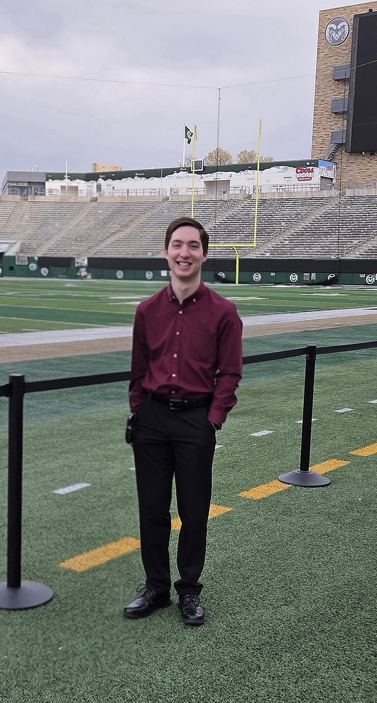

I am a Computer Science graduate from Colorado State University with concentrations in Networks and Security. I currently work in IT support for CSU's Warner College of Natural Resources, supporting faculty, staff, students, and researchers across a large and diverse technology environment.
My experience includes Tier 1/2 IT support, endpoint deployment and imaging, hardware and software troubleshooting, and supporting Windows and macOS systems. I also work with Microsoft 365, Google Workspace, network connectivity, A/V technologies, and other systems used in day-to-day IT operations.
Outside of work, I run a home lab environment built around Proxmox where I manage Windows and Linux virtual machines for both everyday use and ongoing IT professional development. I use the environment to host local services, troubleshoot systems, test configurations, and experiment with technologies.
I am continuing to build my experience across IT support, systems administration, networking, and security, with a focus on developing practical skills that complement my professional experience and Computer Science background.

Colorado State University
B.S. Computer Science
Networks & Security Concentration